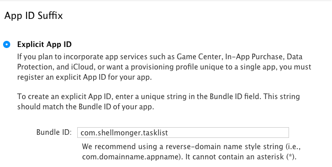
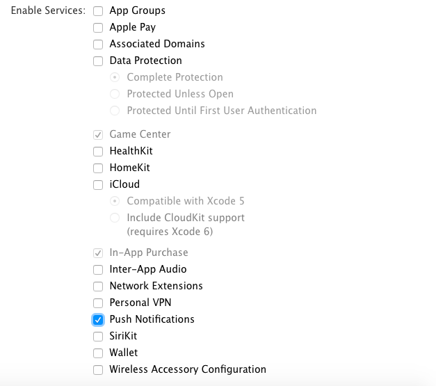
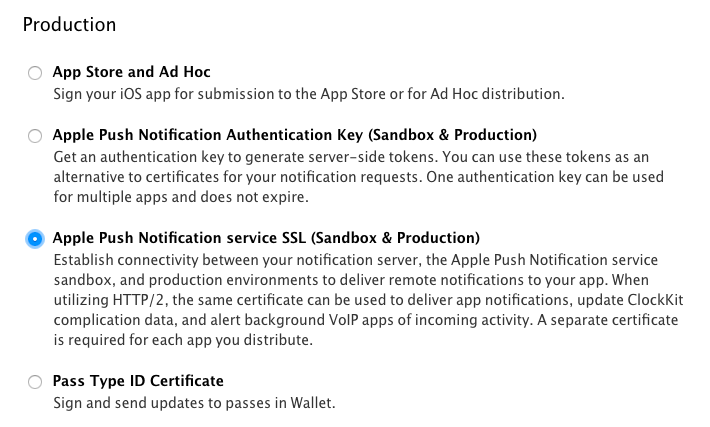
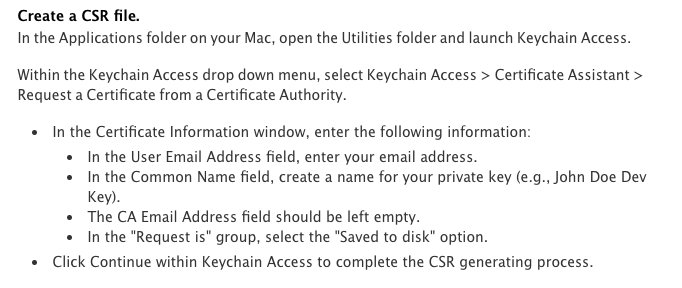
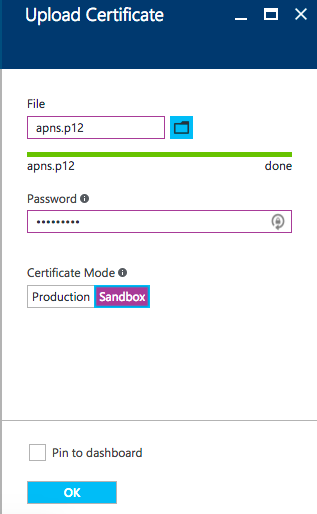
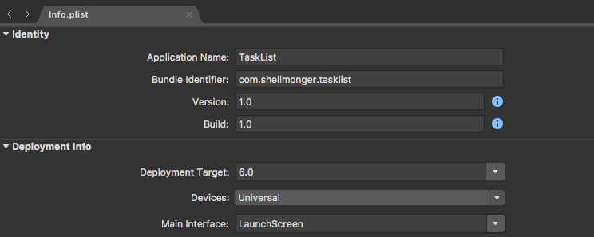
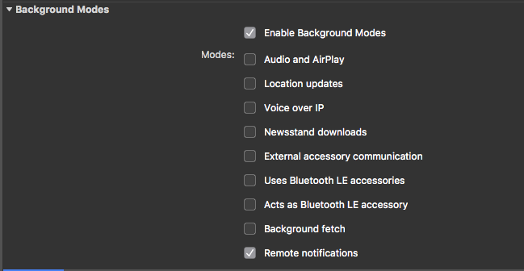
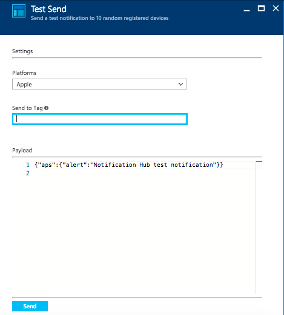

iOS Push
Push notifications for Apple devices is handled by Apple Push Notification Service or APNS. APNS is certificate based, rather than secret based as is the case with FCM. You will find that there are two certificates - a test certificate that is used for test devices, and a production certificate that is used for production devices. You can use a common certificate for both (a so-called Universal Certificate). However, you must ensure that you use the appropriate endpoints - test or production.
It is imperitive that you use a Mac for this configuration. You will be using Apple native tools to generate certificates and the process of configuring the APNS gateway is made easier by using XCode tools. You can do certain things on a PC (like editing the plist files appropriately), but you will end up spending a significant amount of time on the Mac. As a result, I'm going to do this entire section on a Mac.
If you have not done so already, read through the Android Push section to get all the code for the shared project - it won't be repeated in this section.
Registering with APNS¶
Registering with APNS is a multi-step process:
- Register an App ID for your app, and select Push Notifications as a capability.
- Create an appropriate certificate for the push channel (either a Development or Distribution certificate).
- Configure Notification Hubs to use APNS.
- Configure your application to support Push Notifications.
- Add code for handling push notifications to your app.
Let's cover each one in turn:
Register an App ID for your app¶
Once you get to adding push notifications to your application, you are going to need that full developers license from Apple. You need to work with real devices and that means you need code signing certificates on your mac. If you have not spent the cash for the Apple Developers program, then you will probably find you need to at this point.
Registering an App ID is handled on the Apple Developer Portal. Apple does a good job of documenting the process, so these instructions are duplicative of the instructions that Apple provides.
- Go to the Apple Developer Portal and log in with your Apple developer ID.
- In the left-hand menu, click Certificates, IDs & Profiles.
- In the left-hand menu, Identifiers, click App IDs.
- Click the + button in the top right corner.
-
Fill in the form:
- The App ID Description is not used and can be set to anything (subject to validation rules)
- Choose an Explicit App ID for this app.
-
Enter the App ID suffix according to the rules. I used
com.shellmonger.tasklist.
-
Select Push Notifications in the App Services section.

-
Click Continue when the form is complete.
- Make a note of the Identifier in the next screen, then click Register.
- Click Done.
Note that the Push Notifications capability will be listed as Configurable until you create a certificate that is used for push notifications. Once that happens, the capability will be listed as Enabled.
Create a certificate for the push channel¶
I mentioned earlier that APNS is certificate based. That means that you need to generate an SSL certificate to fully configure push notifications:
- Staying in Certificates, Identifiers & Profiles, click All under the Certificates heading in the left hand menu.
- Click on the + button in the top right corner.
-
Select the Apple Push Notification service SSL (Sandbox & Production)

-
Click Continue.
- Select the App ID you just created from the list, then click Continue.
-
Follow the on-screen instructions for creating a Certificate Signing Request (CSR).

-
Once you have generated the CSR, click Continue in the browser.
- Select the CSR you just generated using the Choose File button, then click Continue.
- Click Download to download the resulting certificate.
- Click Done when the download is complete.
- Find your downloaded certificate and double-click on it to import it into Keychain Access
Your certificate will also appear in the Certificates > All list within the Apple Developer console.
Configure Notification Hubs¶
Notification Hubs requires you to upload the certificate as a .p12 (PKCS#12) file. To generate this file:
- Open Keychain Access.
- Select My Certificates from the left hand menu
- Look for the certificate you just generated, and expand it to show the private key.
- Right-click the private key and select Export....
- Select Personal Information Exchange (.p12) as the type and give it a name and location.
- Click Save.
- Enter a password (twice) to protect the certificate.
- Click OK.
Upload the certificate to Azure:
- Open and log into the Azure portal.
- Select Notification Hubs, then the notification hub that is connected to your mobile backend.
- Click Push Notification Services, then select Apple (APNS).
- Click + Upload Certificate.
-
Fill in the form:
- Select the .p12 file you just created.
- Enter the password that you entered to secure the .p12 file.
- Select Sandbox (probably) or Production as appropriate.

-
Click OK.
It's important to figure out whether you are operating in the Sandbox (Development) or Production mode. During development, it's likely that your device will be registered on the Apple Developer console and you will be operating in the sandbox. Any device not listed with the developer console is considered "production". You must update the certificate to a production certificate and specify the production mode when you release your app.
Apple APNS provides two endpoints for pushing notifications. If you use the wrong one, then APNS will return an error code. This will cause Notification Hubs to delete the registration and your push will fail.
Configure your application¶
Before we start with code, you will want a Provisioning Profile. This small file is key to being able to use push notifications on your device. You MUST have a real device at this point. The easiest way for this to happen is to plug the iPhone or iPad that you want to use into your development system. Once your device is recognized by iTunes, close iTunes down and start XCode.
First, locate the Device ID for your iDevice. This can be found by opening Window -> Devices. Click on your iDevice in the left hand bar and copy the Identifier field. There are several other ways of finding the device ID. Refer to the Apple documentation for the other ways.
Once you have the Device ID, you can register the device as a development device. Sign into the Apple Developer Portal, then:
- Under Devices, click All.
- Click the + button in the upper-right corner.
- Select Register Device.
- Enter a device name and the device ID you found earlier.
- Click Continue.
- Click Register.
- Click Done.
Now, create a Provisioning Profile:
- Under Provisioning Profiles, click All.
- Click the + button in the upper-right corner.
- Select iOS App Development, then click Continue.
- Select the App ID you created earlier from the dropdown, then click Continue.
- Select the certificates you want to include, then click Continue. If you are unsure, include them all.
- Select the device(s) you want to use, then click Continue.
- Enter a Profile name, then click Continue.
- You can (and should) download your provisioning profile to your local machine.
- Click Done.
For more information on creating a Provisioning Profile, see the Apple documentation.
Download your Provisioning Profile to XCode
You can also download your provisioning profile within XCode for later use. Visual Studio for Mac will be able to more easily detect it. Open XCode, then open XCode > Preferences. Click Accounts, then your account. Click your Agent entry in the right hand panel, then click View Details. Finally, click Download All Profiles. Once the download is complete, you can close the windows and return to Visual Studio.
Next, configure the iOS project for push notifications. Start by loading your project in Visual Studio for Mac.
- Expand the TaskList.iOS project and open the
Info.plistfile. -
In the Identity section, fill in the Bundle Identifier. It must match the App ID Suffix that you set earlier.

-
Scroll down until you see Background Modes. Check the Enable Background Modes checkbox.
Adding an Account
Visual Studio for Mac uses fastlane for account authentication. You will be walked through the process of adding an account the first time, and prompted to select an account thereafter. Note that fastlane does not work when your Apple ID has 2-factor authentication enabled. Turn 2FA off before you try to add an account.
-
Check the Remote notifications checkbox.

-
Save and close the
Info.plistfile. - Right-click on the TaskList.iOS project, then select Options.
- Click iOS Bundle Signing in the left hand menu.
- Ensure the Platform is set to iPhone and not iPhoneSimulator.
- Select your Signing Identity and Provisioning Profile.
- Click OK.
Provisioning Profiles are frustrating
If you find yourself going round and round in circles on getting the signing certificate and provisioning profile right, you are not alone. This is possibly one of the most frustrating pieces of iOS development. See this Xamarin Forums post for a good list of details.
Code the push handler¶
The push handler is coded in the AppDelegate.cs file. Unlike other platforms (like Android), you don't have to write code to define the push handler. It's always in the same place. Add the following code to the AppDelegate.cs file:
public static NSData PushDeviceToken { get; private set; } = null;
public override bool FinishedLaunching(UIApplication app, NSDictionary options)
{
Microsoft.WindowsAzure.MobileServices.CurrentPlatform.Init();
global::Xamarin.Forms.Forms.Init();
LoadApplication(new App());
if (UIDevice.CurrentDevice.CheckSystemVersion(8, 0))
{
var pushSettings = UIUserNotificationSettings.GetSettingsForTypes(
UIUserNotificationType.Alert | UIUserNotificationType.Badge | UIUserNotificationType.Sound,
new NSSet());
UIApplication.SharedApplication.RegisterUserNotificationSettings(pushSettings);
UIApplication.SharedApplication.RegisterForRemoteNotifications();
}
return base.FinishedLaunching(app, options);
}
/// <summary>
/// Called when the push notification system is registered
/// </summary>
/// <param name="application">Application.</param>
/// <param name="deviceToken">Device token.</param>
public override void RegisteredForRemoteNotifications(UIApplication application, NSData deviceToken)
{
AppDelegate.PushDeviceToken = deviceToken;
}
public override void DidReceiveRemoteNotification(UIApplication application,
NSDictionary userInfo, Action<UIBackgroundFetchResult> completionHandler)
{
NSDictionary aps = userInfo.ObjectForKey(new NSString("aps")) as NSDictionary;
// The aps is a dictionary with the template values in it
// You can adjust this section to do whatever you need to with the push notification
string alert = string.Empty;
if (aps.ContainsKey(new NSString("alert")))
alert = (aps[new NSString("alert")] as NSString).ToString();
//show alert
if (!string.IsNullOrEmpty(alert))
{
UIAlertView avAlert = new UIAlertView("Notification", alert, null, "OK", null);
avAlert.Show();
}
}
The NSDictionary, NSData, and NSString classes are part of the iOS programming model and do exactly what you would expect them to do. The UIAlertView class provides a standard alert. We need to add a little bit of code to the FinishedLaunching() method to send the registration request to APNS. When the response is received, the RegisteredForRemoteNotifications() method is called. Finally, the DidReceiveRemoteNotification() method is called whenever a remote push notification is received.
Call common code for push notifications
One of the great things about Xamarin Forms is that it is cross-platform. However, that all breaks down when you move to push notifications. One of the things you can do is to use the push handler to generate a model and then pass that model to a method in your PCL project. This allows you to express the differences clearly and yet still do the majority of the logic in a cross-platform manner.
Registering with Azure Mobile Apps¶
As with Android, I recommend using a HttpClient for registering with Notification Hubs via the Azure Mobile Apps Push handler. Here is the code that does basically the same thing as the Android version from the Services\iOSPlatformProvider.cs file:
public async Task RegisterForPushNotifications(MobileServiceClient client)
{
if (AppDelegate.PushDeviceToken != null)
{
try
{
var registrationId = AppDelegate.PushDeviceToken.Description
.Trim('<', '>').Replace(" ", string.Empty).ToUpperInvariant();
var installation = new DeviceInstallation
{
InstallationId = client.InstallationId,
Platform = "apns",
PushChannel = registrationId
};
// Set up tags to request
installation.Tags.Add("topic:Sports");
// Set up templates to request
PushTemplate genericTemplate = new PushTemplate
{
Body = @"{""aps"":{""alert"":""$(messageParam)""}}"
};
installation.Templates.Add("genericTemplate", genericTemplate);
// Register with NH
var response = await client.InvokeApiAsync<DeviceInstallation, DeviceInstallation>(
$"/push/installations/{client.InstallationId}",
installation,
HttpMethod.Put,
new Dictionary<string, string>());
}
catch (Exception ex)
{
System.Diagnostics.Debug.Fail($"[iOSPlatformProvider]: Could not register with NH: {ex.Message}");
}
}
}
In this case, we don't have a service class to deal with - the iOS AppDelegate does all the work for us. The registration Id is stored in the AppDelegate once registered, but needs to be decoded (which is relatively simple). Similar to the Android version, we make the template we are using match what we are expecting within our push handler.
Receiving Notifications in the background
If you want your app to be notified when a notification is received when your app is in the background, you need to set the Background Fetch capability and your payload should include the key content-available with a value of 1 (true). You can add this to the Body of the template in the above sample. iOS will wake up the app and you will have 30 seconds to fetch any information you might need to update. Check the documentation for more details.
Testing Notifications¶
Our final step is to test the whole process. As with Android, there are two tests we need to perform. The first is to ensure that a registration happens when we expect it to. In the case of our app, that happens immediately after the authentication. There is no Notifications Hub registration monitor in Visual Studio for Mac, so we have to get that information an alternate way, by querying the hub registration endpoint. I've written [a script] for this purpose. To install:
To use, you will need the endpoint for your notification hub namespace.
- Log onto the Azure portal.
- Open your Notification Hub namespace.
- Click Access Policies.
- Copy the connection string of the
RootManagedSharedAccessKey(which is probably the only policy you have).
You can now use the program using:
node get_nh_registrations.js -c '<your connection string>' -h <your hub name>
You will need to put the connection string in quotes generally. For example:
node .\get_nh_registrations.js -c 'Endpoint=sb://zumobook-ns.servicebus.windows.net/;SharedAccessKeyName=RootManageSharedAccessKey;SharedAccessKey=
****c9VoZHtxSGliSIhH5EEuar1B/jsrgTQTHOTA=' -h zumobook-hub
The output will look something like the following:
Type: APNS (Template)
Id: 219869525209729025-4738338868778066550-1
Device Token: 681F6BB012C62A61AA2185A676B23907A5FEFE9268283DD226B08B5F0336A552
Tag: topic:Sports
Tag: _UserId:a9650e1c4d3268ec912f4d9ca6d1d933
Tag: photoadrian@outlook.com
Tag: $InstallationId:{d7323fe4-64bb-4d99-a6cc-e7690032350f}
Expires: 9999-12-31T23:59:59.9999999Z
Note that this script does not deal with "continuation tokens", so it can only return the first page of information. This is generally suitable for testing purposes.
We can also send a test message for push notifications. This can be done via the Azure Portal.
- Log onto the Azure portal.
- Find the Hub resource for your connected Notification Hub and open it.
- Click Test Send.
- Select Apple as the Platform, then click on Send.

Your device should also receive the push notification and display an alert. You can also do a test send to an explicit tag. This can narrow the test send to just one device if necessary. To send to a specific device, you need to know the installation ID of the registration.
Common Problems¶
As you might expect, there is plenty to go wrong here. The majority of the issues come down to the fact that there are two endpoints on APNS - a Sandbox (or Developer) endpoint and a Production endpoint. If you are using the wrong endpoint, the notification hub will receive an error. If the notification hub receives an error from the APNS endpoint, it will remove the registration causing the error. This manifests itself in two ways. Firstly, your device will not receive the push notification. Secondly, the registration will be removed from the list of valid registrations, causing you to think that the device has not been registered.
This has not been made easy by the fact that Apple has combined the certificates needed to push into a single certificate for both Sandbox and Production use cases. To correct this issue, ensure the notifiction hub is set up with the appropriate endpoint - Sandbox or Production.
Next you can move onto Windows Push or skip to the Recipes Section.